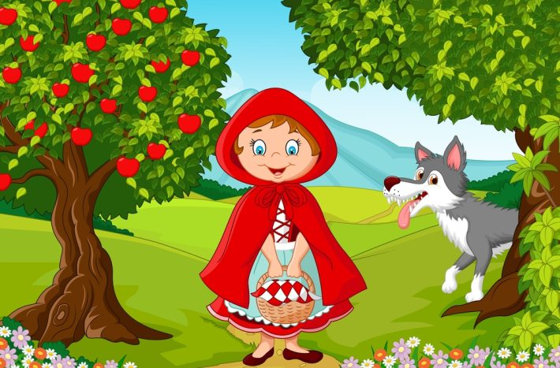

VÍTEJTE
Toto je stránka o jedné z nejznámějších pohádkových postav.
Klikněte na lištu v levo abyste se dostali do jiných sekcí.
Toto je stránka o jedné z nejznámějších pohádkových postav.
Klikněte na lištu v levo abyste se dostali do jiných sekcí.